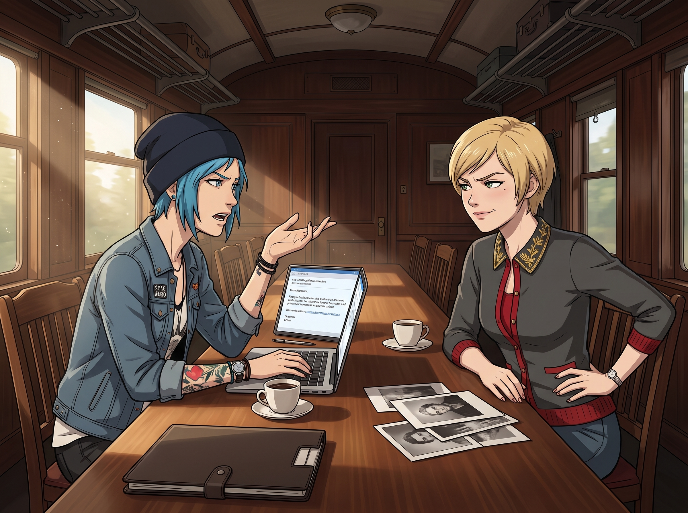

銀鹽樣板

週二上午，二號車廂長桌前迎來了搬遷後的第一個大單諮詢。
一位西雅圖老牌私人畫廊的合夥人兼藏家，透過 Victoria 的引薦，希望為其家族委託定制一組大尺寸純手工銀鹽黑白肖像。但在正式簽約並支付高額定金前，對方發來了一封措辭極其講究的郵件，提出了一個非常合理的專業請求：「為了確認暗房在光影過渡、暗部細節與傳統銀鹽分區曝光上的最高控制力，希望能先審閱一張由貴工坊製作的同等規格極致樣板。」
郵件剛在投影屏幕上點開，長桌前的兩位工坊合夥人就因為「由誰來充當樣板模特」瞬間開啟了高強度的陰陽怪氣模式。
一、樣板爭奪戰
Victoria 翹著二郎腿，用指尖輕輕推下墨鏡，冷笑著掃了一眼對面的 Chloe：「這還需要討論嗎？既然是西雅圖頂級畫廊的藏家，對方的審美標準必然是嚴苛的古典比例。這種幾千美元一張的手工銀鹽樣板，只有本小姐這種線條凌厲的顴骨、頂級面部輪廓以及與生俱來的階級質感，才能完美展現暗部灰階的奢華過渡。難道要讓某個臉上常年沾著機油灰塵的藍領去拉低客單價？」
Chloe 嚼著薄荷糖，手裡轉著一把小扳手，翻了個巨大的白眼：「哈！得了吧，Chase 夫人！您那張臉拍出來除了像私立高中的招生宣傳手冊，或者某家即將破產的投行年報封面之外，還有半毛錢藝術張力嗎？現在的高端藏家要的是真實的生命力！老娘這頭不羈的藍髮、手腕上的紋身，配上車床飛濺的火花，才能把 Max 的高反差暗房顆粒感發揮到極致！懂不懂什麼叫真正的街頭先鋒啊，大富婆？」
「街頭先鋒？Price，妳那是未開化的蒸汽時代殘留物。」
「總比某些需要打三層高光才能看見輪廓的資本家假面強一萬倍！」
二、掌鏡人的終極裁決
兩人越吵聲音越大，眼看著 Victoria 已經伸手去摸桌上的硬殼文件夾，Chloe 已經握緊了扳手。
坐在兩人中間、正在給大畫幅相機擦拭鏡頭的 Max，終於忍無可忍地抬起頭。她深吸了一口氣，揉著被吵得嗡嗡作響的太陽穴，以極其冷靜且帶著絕對威嚴的語氣一錘定音：「好了！妳們兩個都給我閉嘴。」
Max 放下擦鏡布，伸手指向窗邊陽光下那道溫柔安靜的身影：「誰都不用爭了。這次的銀鹽樣板，由 Kate 來當模特。」
三、全員光速熄火與全票通過
上一秒還在劍拔弩張、隨時準備真人快打的兩個人，在聽到「Kate」這個名字的瞬間，臉上的表情在一毫秒內完成了統一步調的急剎車。
名媛原本微揚的下巴微微一頓。她看了一眼正抱著水壺給迷迭香澆水、側臉沐浴在晨光中的 Kate，眼神裡的挑剔瞬間融化成了一種近乎本能的認可。Victoria 輕咳了一聲，優雅地整了整風衣領口，面無表情地順坡下驢：「……行吧。既然 Caulfield 考慮到了古典主義繪畫光影，Marsh 的文藝復興式輪廓和柔和漫反射光，在銀鹽相紙上的高光保留確實挑不出一點毛病。算妳做了個理智的決定。」
Chloe 手裡的扳手「啪嗒」一聲扔回工具盒，原本囂張的氣焰瞬間消失得無影無蹤。她抓了抓藍髮，大咧咧地靠回椅背上，撇了撇嘴：「切……好吧，如果是 Kate 的話，老娘沒意見。畢竟誰能拒絕一個自帶聖光的天使呢？這要是那個西雅圖老頭敢挑刺說樣板不好看，老娘就親自開著皮卡去把他的畫廊招牌拆了。」
四、天使的懵懂上鏡與二號車廂的極致專注
正拿著小水壺的 Kate 眨了眨眼睛，有些驚訝地轉過頭，長長的雙麻花辮隨著動作輕輕晃動，雙手有些無措地交疊在圍裙前：「誒？我……我來當模特嗎？可我……我怕我表現得不夠專業，耽誤了 Max 的大客戶……」
「妳不需要做任何表演，Kate。」Max 走過去，笑著拉開車廂側面的避光亞麻布簾，將最乾淨柔和的北向海風漫射光引了進來，「只要像平時那樣坐在窗邊看書就好。」
長桌前瞬間切換成了專業片場。Victoria 親自上前，用那雙挑剔的手將 Kate 耳側的一縷碎髮撥到最完美的黃金角度，並遞上一本裝幀精美的拉丁文舊皮書；Chloe 迅速爬上天花板滑軌，將一塊親手打磨的大號鋁製反光板精準微調到 45 度角，為暗部補上一抹極細膩的微光；Max 則在大畫幅相機的毛玻璃背板後，扣下快門線。
兩個小時後，二號車廂暗房的紅光下，一張細節層次深邃到令人屏息的純手工銀鹽肖像在定影槽中緩緩顯現——晨光、松林海風、以及那個安靜溫柔的天使，被凝固成了足以征服任何挑剔藏家的純粹藝術品。長桌前的喧鬧最終化作了相紙上永恆的靜謐。